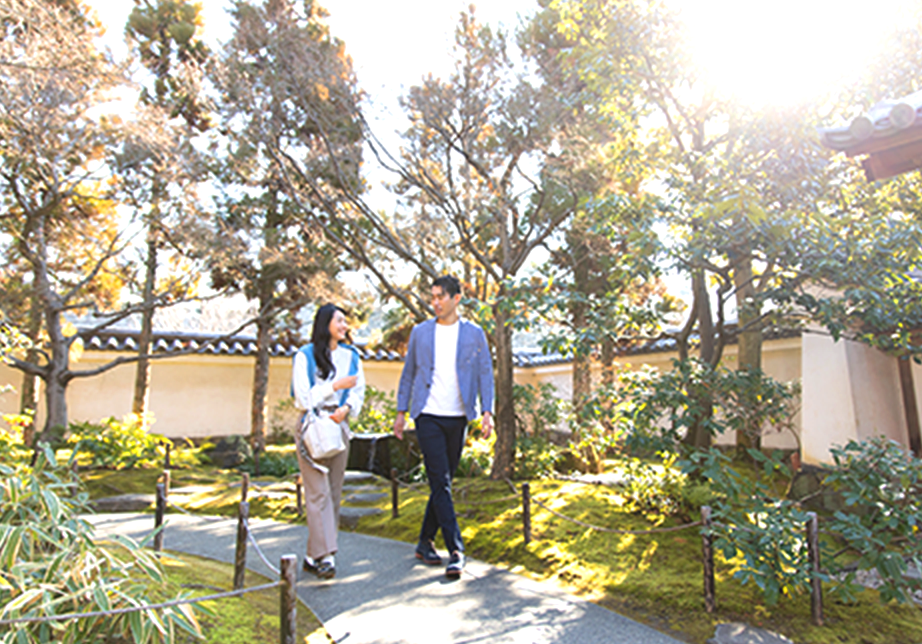

シエリア姫路城 東 ライフスタイル
世界遺産の姫路城を傍らに、
優雅で快適な暮らし
世界文化遺産である「姫路城」からほど近く、風情ある閑静な住宅街に誕生する「シエリア姫路城 東」。 豊かな自然や歴史、文化に囲まれた環境だけでなく、姫路駅周辺は街の再開発「キャスティ21計画」も進行し、ますます未来の姿にも期待が。 四季の移ろいと都市の利便性を通して楽しめる暮らしがここにあります。
深い歴史と豊かな緑で彩られ、
文化や利便性も共存する姫路の暮らしやすさ
「シエリア姫路城 東」が位置するのは、「姫路城」から南東の由緒正しい城巽エリア。
かつては武家屋敷や町家が並ぶ城下町であったことから、
現在も「姫路城周辺風景形成地域」に指定され、風情ある景観が広がります。
またお城を囲むように大小さまざまな公園があり、緑の潤いに癒されるロケーション。
日頃から地域の人々や子どもたちの憩いの場に。
日々のなかで、歴史と共に緑豊かな環境にふれあえる環境が整っています。

落ち着きのある景観に佇む風趣ある住まい
「シエリア姫路城 東」マンション周辺は中核市姫路の中心部にありながら、繁華街の喧騒から離れ、穏やかな環境が広がります。
エントランスを出て少し歩みを進むと、すぐに「姫路城」の中堀が見えてきます。 歴史的建造物と緑と水面の情景が調和する心地よい空間が創られています。この穏やかな景観を眺めながら散策やジョギングを楽しむのもよさそうですね。
姫路城の南西に広がる美しい日本庭園
市制百周年を記念して建造された、約1万坪の日本庭園。世界遺産・国宝の姫路城を借景に、9つの趣の異なる庭園で構成されています。
園内には多くの花が植えられ、春には桜、秋には紅葉の人気スポットとしても知られており、訪れる人を四季折々の情景で出迎えてくれます。
-
提供：姫路市 -
提供：姫路市
-
 -
姫路城西御屋敷跡庭園 好古園 徒歩13分（約1,020ｍ）
- 住所：姫路市本町68
- 電話番号：079-289-4120
- 開園時間：4月27日～8月31日は9:00～18:00（入園は17:30まで）、 9月1日～4月26日は9:00～17:00（入園は16:30まで）
- 定休日：無休
- 入園料：大人（18歳以上）310円、小人（小・中学生、高校生）150円
さまざまなジャンルのイベントが催される公園
姫路城の玄関口に位置する「大手前公園」。
25,000平方メートルもの敷地を誇り、中央にある広場を囲むように木々が植栽されています。
広場では「ひめじ花と緑のガーデンフェア」や「ひめじ地産地消フェア」、
「ロハスパーク姫路」などといった中心市街地活性化のためのさまざまなジャンルのイベントが開催され、
多くの人々でにぎわいを見せます。
姫路城の北面を見ることができる広大な公園
姫路城の北に位置する緑豊かな公園。もともとは市制100周年を記念して行われた「'89姫路シロトピア博」の跡地を利用して整備され、「兵庫県立歴史博物館」や「姫路市立図書館」が隣接していることもあり、たくさんの市民や観光客に親しまれています。
公園内にある約1.2ヘクタールある芝生広場があるほか、「ふれあい広場」や「野外ステージ」、休憩所の「扇観亭」など多彩な施設が備わっています。
世界の名品も展示する赤レンガの美術館
白鷺に例えられる世界文化遺産・姫路城を臨む赤レンガが特徴的な美術館。
2019年4月にリニューアルオープンを果たし、常設、企画、コレクションギャラリーの3つの展示室ではピサロ、モネなど世界的な名品を貯蔵するほか、
さまざまな展覧会を開催しています。
庭園には屋外彫刻があり、レンガの外観がライトアップされる夜景もおすすめです。
姫路市立美術館 徒歩13分（約1,020ｍ）
- 住所：姫路市本町68-25
- 電話番号：079-222-2288
- 営業時間：10:00～17:00（入館は16:30まで）
- 休館日：毎週月曜（祝日・休日の場合をのぞく）、年末年始
特別な日に訪れたいレストランから普段気軽に気軽に立ち寄れるカフェまで。
姫路城を目の前に、過ごす贅沢な毎日。
緑の潤いに癒された後は、
いつも通っているカフェや隠れ家的なベーカリーでちょっと一息。
緑豊かな環境にふれあえる環境のなかに美味しさも揃っているので
いつもの暮らしが贅沢に変わります。
こだわりの素材で焼き上げる自家製パン
姫路城大手門前のメインストリートから1本西に入ったところにある、隠れ家的なベーカリー。
レトロな雰囲気の店内には、数多くのパンがずらりと並びます。人気はアメリカ仕込みのボリュームたっぷりのハンバーガー。
天然酵母を使った種類豊富なベーグルや風味の良い食パンなど、丁寧に焼き上げられるその味に、足繁く通うファンが多いのにも納得です。
BAKERY 燈 LAMP （ベーカリーランプ） 徒歩約11分（約850m）
- 住所：姫路市本町68 平和不動産ビル1F西
- 電話番号：079-284-9775
- 営業時間：10:00～19：00（日曜日は18：00まで）
- 定休日：月曜日・第2火曜日
美味しいパンとコーヒーでひと息
地元の人気ベーカリー「BAKERY 燈 LAMP」の姉妹店のカフェ。
バインミーやピザなどの自家製パンのほか、本格コーヒーと相性の良いドーナツなども提供しているので、
朝食、ランチ、おやつ…とシーンに合わせて楽しむことができます。
店内ではコーヒー豆も販売。テイクアウトのみのお買い物にも気軽に立ち寄れるのがうれしいですね。
Pamela’s coffee（パメラーズコーヒー） 徒歩約11分（約820m）
- 住所：姫路市本町68-4 高山不動産ビル1F
- 電話番号：079-262-6757
- 営業時間：8:30～18:00（L.O.17:30）
- 定休日：水曜日・第2火曜日
季節感あふれる見目麗しいスイーツの数々
自分たちの作るお菓子がたくさんの笑顔を咲かせますように、という思いを込めて、
フランス語で「歓びの種」を意味する「グレーヌ ド ジョワ」。
農家から直接仕入れるという旬の果物をふんだんに使ったケーキのほか、ショーケースには随時20種類ほどがスタンバイ。
手土産にぴったりなレモンケーキやバウムクーヘンなどの焼菓子も人気を集めています。

Patisserie Graine de joie（グレーヌ・ド・ジョワ） 徒歩約7分（約530m）
- 住所：姫路市元塩町121-1
- 電話番号：079-224-3305
- 営業時間：10:00～19:00
- 定休日：火曜日・水曜日（営業する場合もあり）
姫路城を望む空間で過ごす贅沢なひととき
店をぐるりと囲む大きな窓から姫路市街の眺望が広がる絶景レストラン。
姫路城を目の前に、ランチ、ディナーともに和食の技法を取り入れた和洋折衷地のコースが堪能できます。
地元の農家から届く低農薬や無農薬の野菜を使った料理は、素材を活かした滋味深い味わいが年齢層を問わず評判。
記念日やお祝いなど、ぜひ特別な日に訪れたいお店です。
SORANIWA （ソラニワ） 徒歩約13分（約990m）
- 住所：姫路市本町241 美樹ビル6F
- 電話番号：079-281-0070
- 営業時間：ランチ11:30～15:30（L.O.14:00）、ディナー17:30～21:30（L.O.20:00）
- 定休日：月曜日 ※火曜日はディナーのみ営業
- ※掲載の情報は、2019年9月時点のもので変更になる場合があります。
- ※掲載の環境写真は2019年6月、2020年1月に撮影したものです。